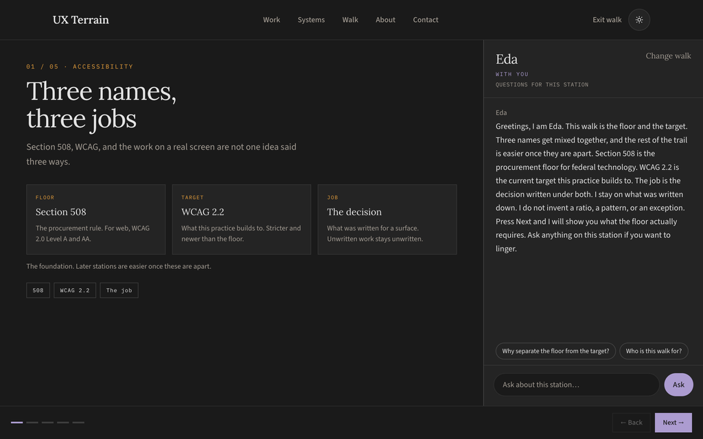

Eda · Accessibility guide
Understand the accessibility decisions behind an interface.
Eda is an AI accessibility guide that combines guided stations and questions about accessibility concepts and written interface decisions. It gives the subject a distinct voice and a clear scope within the portfolio.
Give accessibility questions a clear place
Eda is a separate AI accessibility guide within UX Terrain. The product organizes explanations of accessibility concepts and written interface decisions into short walks. Its purpose is to help visitors understand the reasoning and its limits, while keeping design-story questions with Oslo.

Separate guidance from a finding
A standard, an interface description, and a test result serve different purposes. Eda’s instruction distinguishes them. A station can explain a concept or discuss a decision documented in a case; it cannot establish that a shipped screen meets a standard without the relevant testing.
The current implementation uses authored guidance and station context. It does not inspect the page’s DOM or run an automated accessibility audit. Missing measurements and undocumented interaction behavior remain open questions.
Keep the explanation attached to the interface
A visitor can choose an introductory walk or explore written decisions on a case-study screen. The case panel anchors the walkthrough to the relevant visual. Suggested questions stay with that topic, and the visitor can move back, continue, or ask a question before leaving.
- 01
Introduce
Name the subject and what the walk can explain.
- 02
Show
Keep the relevant interface or concept in view.
- 03
Question
Offer prompts and a field for the visitor’s own question.
- 04
Continue
Let the visitor control the pace.
Give the guide its own scope
Eda has a separate instruction file and authored station material. Questions identify Eda explicitly, so the shared endpoint loads her guidance. The language is designed to be calm and specific about written evidence, with a clear boundary around claims that require an audit or additional information.
Share the player, keep the products distinct
Oslo and Eda reuse the walkthrough player and chat endpoint. They have different names, visual accents, instructions, and subject matter. That shared structure supports consistent navigation and interaction states while keeping the purpose of each guide clear.
Oslo helps visitors explore the product-design story. Eda explains accessibility concepts and the interface decisions written for her stations. Keeping those roles distinct helps visitors choose the right conversation.
What I designed
Eda’s role within the portfolio; the separation from Oslo; the written scope and response boundaries; the station sequence, scripts, and questions; and the interaction between the case-study visual and the conversation panel. The work is the design of a bounded guide, including when it should acknowledge that the evidence is incomplete.
Evaluate the guide without overstating its reach
The next evaluation should check whether visitors understand Eda’s role, can navigate the stations, and can distinguish an explanation from a verified finding. It should also test how reliably answers stay within the written material. The presence of the guide is not a conformance result for the portfolio or its case studies.